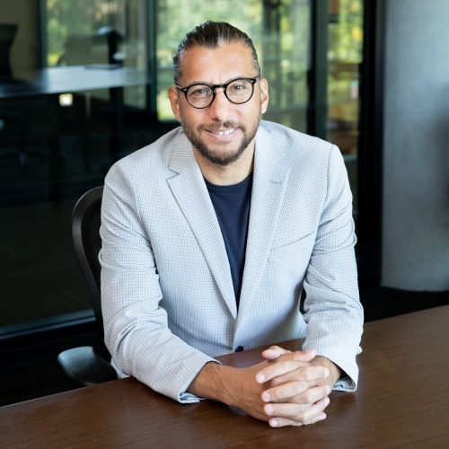

View biography and contact ↗Aydin Bal
University of Wisconsin–Madison
Aydin Bal
University of Wisconsin–Madison
Aydin Bal is a professor of special education at the University of Wisconsin—Madison. Dr. Bal’s research focuses on the interplay between culture, learning, and mental health across local and global education systems. He examines the social justice issues in education, family-school-community-university collaboration, organizational innovation, and future making. He has developed the Culturally Responsive Positive Behavioral Interventions and Supports framework and the Learning Lab methodology. In Learning Labs, local stakeholders (educators, students, families, policy makers, and community representatives), especially those from historically marginalized communities, design and implement culturally responsive behavioral support systems. Learning Lab has been implemented in 15 public schools and teacher education institutions in Florida, Kansas, New Hampshire, and Wisconsin in the United States and internationally in the Anishinaabe Nation, Brazil, and Turkey.
As a practitioner and researcher, Dr. Bal has worked with youth from minoritized communities experiencing academic and behavioral problems in schools, hospitals, and prisons from the United States, South Sudan, Syria, Iraq, the Russian Federation, Turkey, the Anishinaabe Nation, Malawi, and Brazil. Dr. Bal has worked with several education agencies as a consultant including Madison Metropolitan School District, Sun Prairie Area School District, and Texas Education Agency. He has published in leading journals in education, learning sciences, and behavioral health including American Educational Research Journal, Review of Educational Research, Review of Research in Education, Cognition and Instruction, the Journal of Special Education, Child and Adolescent Psychiatry, Teachers College Records, and Urban Education. In 2017, Dr. Bal received the American Educational Research Association (AERA) Review of Research Award. In 2018-2019, he was awarded a Fulbright fellowship. Dr. Bal is the recipient of the 2019 AERA Scholars of Color Early Career Award, the 2022 AERA Cultural Historical Special Interest Group Early Career Award, and the 2023 Council for Exceptional Children (CEC) – Division for Research – Distinguished Researcher from Underrepresented Groups Award.